How To Play The Escaper
Move with WASD, look with the mouse, fight, fly, and explore — then jump into world mini-games: Pool, Bowling, Tetris, Chess, Checkers, and BaffleShots.
Overview
The Escaper is a 3D first-person adventure. Explore the world in your cage, collect gear, fight enemies, and play optional arcade mini-games scattered around the map. You have 3 lives; landing in Ocean-tagged water cancels fall impact.
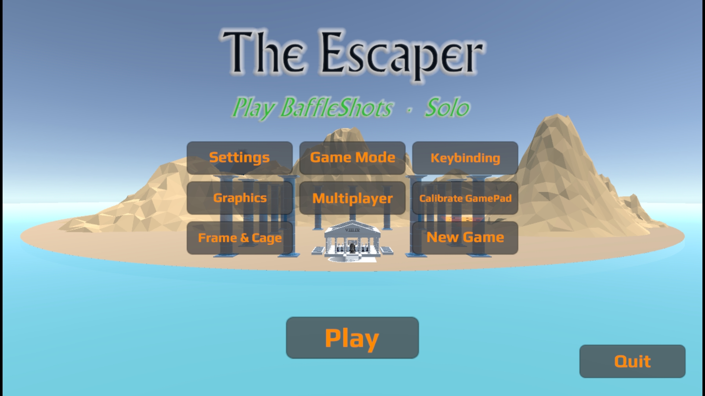
images/01-escaper-overview.jpg.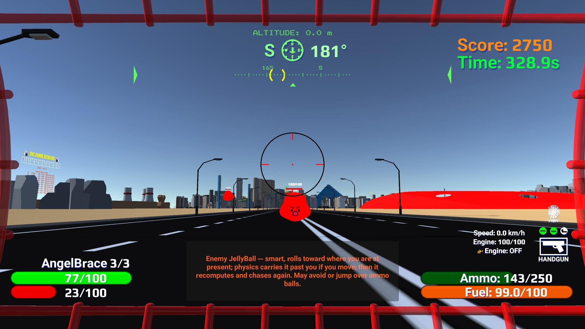
02-first-person-hud.jpg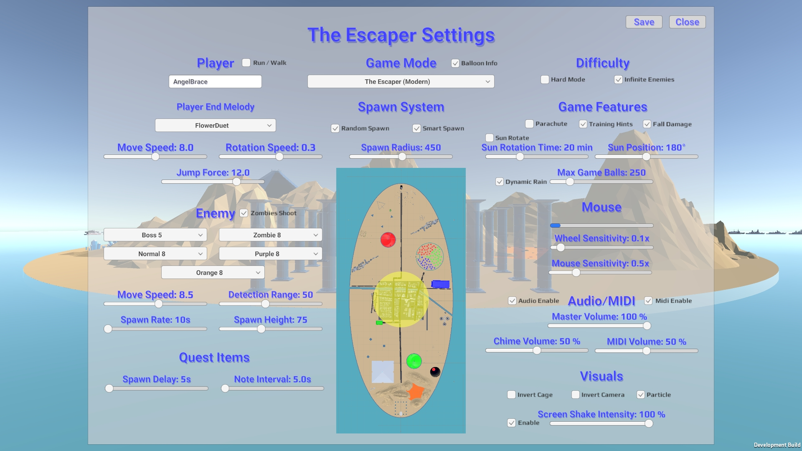
11-settings-f2.jpgGame modes
Pick a mode from Game Selection → Game Mode, or in F2 Escaper Settings (Game mode dropdown). The HUD shows the active mode; Photon lobbies sync it when the host starts.
Live multiplayer session: after a Play / Explore run is already going, the host can pick another Play venue or Explore from Game Mode. Everyone leaves the old mini-game, teleports to the new seats, and gets a lobby (no auto-start). Walk to that venue’s OPS / stele and press START there. Combat modes (Modern / Quest / Classic / Infinite) stay a full New Game. Guests cannot switch. Overlays such as Game Selection close so everyone returns to the 3DGameHUD; leftover Game Info balloon text from the previous venue is cleared.
The Escaper (Modern)
Default full adventure: enemy waves, random lost Cage Bowl and Propeller spawns, SoundSight treasure chimes, then find the Duck Raft and escape Arcade Island.
Escaper (Quest)
LavaFlow crossing: At the base of the southeast mountains, LavaFlow is a field of random floating lava rocks. Each rock is stable for only a few seconds (about 3) before it bubbles and sinks into the flow. A bloop warning sounds around 2 seconds — listen for it and leap to the next rock before yours drops. Sunk rocks rise back up so you can retry the crossing.
Same combat and escape goal as Modern, but quest items sit at fixed landmarks. The lost Propeller is on SnowyLavaRock — the odd snow-covered rock in the middle of LavaFlow that does not sink (unlike the floating lava rocks around it). A Snowman stands on the rock; behind the Snowman is the beige Large Ammo Crate (the green Large Ammo Crate with the DetPack is in CrossFields). Stand on SnowyLavaRock for +1 health and +1 fuel every second (Sleigh Ride MIDI loops while you are there). The beige crate stockpiles yellow ammo while you stay on the rock — one ball on first contact, then another every minute (the timer pauses if you leave); walk to the crate to collect. After the Propeller, the Cage Bowl is fixed high on a skyscraper — you need flight to reach it.
Infinite Enemies
Like Modern, but enemy amount sliders are hidden and waves keep coming until you destroy 8 island sentry buoys (then spawning stops). Destroy 3 sentries to disable JellyRover boss spawn, same as other modes.
Escaper Classic (The Prisoner)
No grunt waves — only the JellyRover boss, which hunts you starting 30 seconds after the run begins (and keeps respawning). Still find bowl, propeller, and duck raft to escape.
Explore Arcade Island
No enemies; Cage Bowl, Propeller, and Duck Raft are already equipped. Roam the island and play any mini-game without the main quest pressure.
Play Checkers / Chess / BaffleShots / Bowling / Pool / Teeny Tiny Tetris
No enemies; quest gear, full ammo, and full fuel from the start. Each mode warps you to its venue (North Parthenon checkers, South Parthenon chess, Nav OPS East/West, bowling lane, billiard table, Tetris South/North OPS) so you can practice or host multiplayer there. In a live Photon session the host can hop between these venues (and Explore) without ending the room — see Live multiplayer session above.
WASD + mouse
Movement & camera
| Input | Action |
|---|---|
| W A S D | Move |
| Mouse | Look / camera |
| Left Shift | Sprint |
| Space | Jump |
| V | 1st person ↔ 3rd person |
Combat
| Input | Action |
|---|---|
| LMB | Fire |
| RMB | Zoom. Melee: pick up FlipChip / C4 dud. C4 mode: RMB hold to arm, release to drop. F10 toggles binoculars |
| Mouse wheel | Throw-sight loft (Cannon Ball / BallChain). Melee: Punch (or flip held FlipChip). C4 mode: fuse length 3–30s |
| 1–9, 0 | Quick weapon select. 9 toggles Blaster Grenade ↔ C4 (after DetPack) |
Weapon number keys
| Key | Weapon |
|---|---|
| 1 | Melee |
| 2 | Handgun |
| 3 | Machine Gun |
| 4 | Cannon Ball |
| 5 | Blaster Shots |
| 6 | Chain Gun |
| 7 | Sniper Gun |
| 8 | DumbBall |
| 9 | Grenade |
| 0 | BallChain |
FlipChip (coin toss)
Two half-checkers (red + black) with their own rigidbody and bounce. Melee object pickup / toss is a core Melee function and stays available on the CheckerBoard, cue stand, and other no-weapon / mini-game zones.
- Equip 1 Melee. Aim at a FlipChip and press RMB (no Shift) to pick it up. RMB again drops it.
- Mouse wheel flips the held chip. Shift+wheel still sets Punch for the toss.
- LMB while holding tosses it. Punch scales throw power, spin, and hit damage.
- A thrown chip that hits an enemy deals melee-style damage and knockback. After it settles, the HUD shows Red Side Up or Black Side Up.
- Console:
/flipchipdrops a new chip 10 ahead and 50 up.
Checkers FlipChip (pre-game): At CheckersOPS, press the FlipChip button to spawn the coin on the OPS screen. Equip Melee, RMB pickup, LMB toss (fast spin — no flip-count rule). When it settles, Black side up → Player1/Host plays Black; Red side up → Player1/Host plays Red (default Black if you never toss). Works solo vs AI and in a Photon room — either player can toss before Start. Seats lock once on Start; mid-game tosses only affect the next match after Reset. Chip lost in the ocean → press FlipChip again to respawn. While the coin is in the world, the fourth direction indicator under the compass (FlipChip icon) points toward it — see Direction indicators (hidden while held in melee).
C4 Timer Bomb
Collect the DetPack from the light-green Large Ammo Crate in CrossFields (LargeAmmoCrate on the map). Until then, yellow GameBalls bounce off you. After DetPack, each yellow collect is +1 C4 charge. A fourth inventory icon turns green when the DetPack is found — there is no compass direction arrow for the crate or DetPack (only the four indicators listed under Direction indicators).
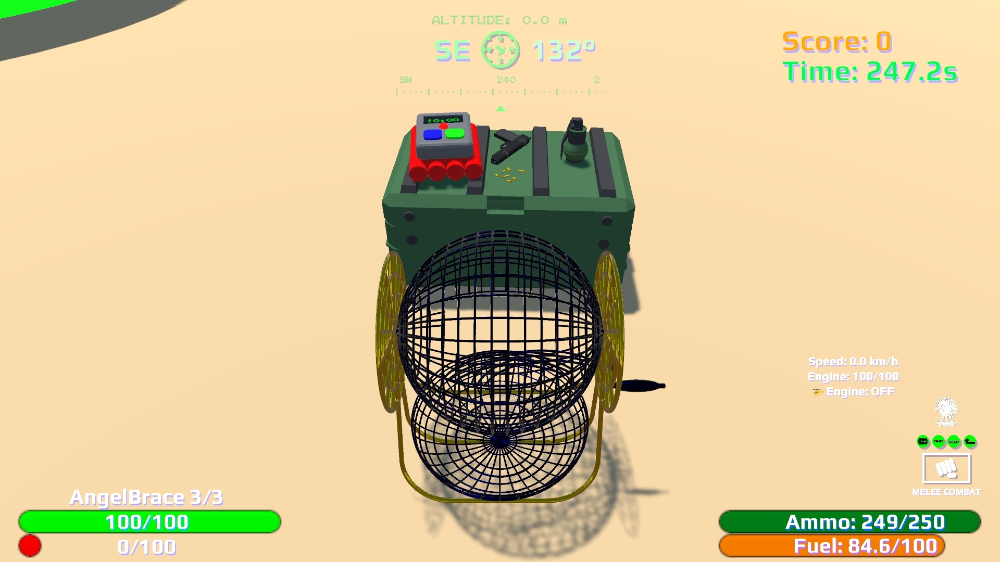
33-crossfields-large-ammo-crate.jpg (light-green Large Ammo Crate / LargeAmmoCrate)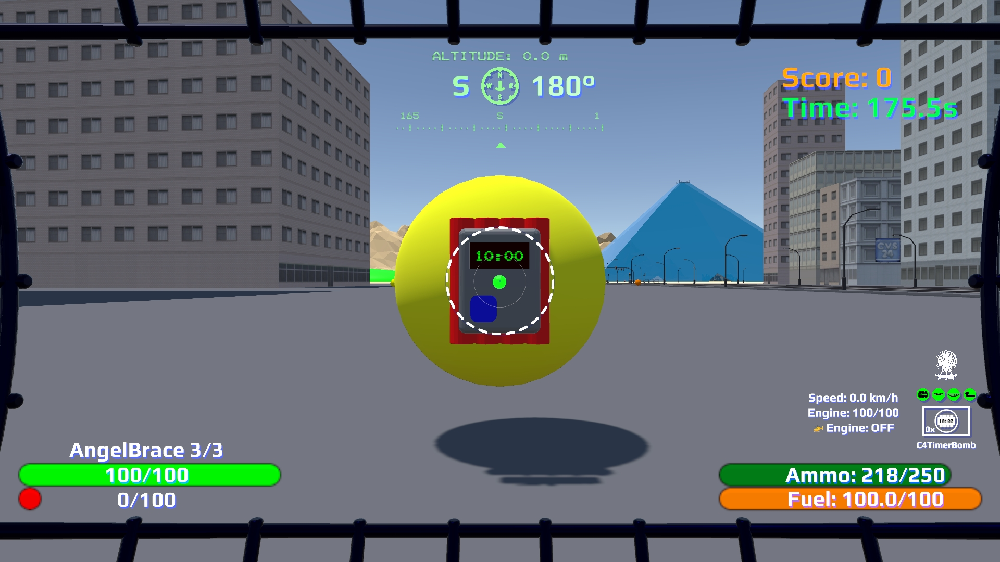
29-c4-timer-bomb.jpg (optional; planted bomb LCD fuse or selected-weapon slot with charge count)- 9 toggles Blaster Grenade and C4TimerBomb (after DetPack). Quick Menu C4TimerBomb also works. Needs at least one C4 charge. Slot shows DetPack icon plus
charges · fuse(e.g.3x · 10s). - Throw power uses Melee Punch — set on weapon 1 (wheel / Shift+wheel). C4 does not change Punch; it reuses whatever you last set on the fist.
- Mouse wheel in C4 mode sets fuse length (3s min, 30s max; default 10s). Fuse meter flashes under the sight; bomb LCD shows the preset before stick.
- LMB quick throw — spawns and throws at your aim (no RMB hold required).
- RMB hold — arm in hand (−1 charge). LMB while holding = throw. RMB release = drop. Fuse starts on first solid impact after throw or drop.
- Blast radius is 2× Blaster Grenade; chain-detonates other armed C4 in range.
- First solid hit sticks. The bomb LCD counts
10:00down to00:00in 60ths of a second. The 3DDetonatorLightmesh flashes GreenEmit / RedEmit (faster in the last 2 seconds). An electronic beep plays at10:00and every second until detonation. Stay too close and you take blast damage. Blast uses the BaffleShots ship-hit VFX (CFXR2 WW Explosion). - Blast radius is 2x the grenade blast. Damages enemies and the player, knocks rigidbodies, and destroys SentryBuoys (they sink). 3 sentries still disable JellyRover boss spawn; 8 still stop Infinite waves.
- Console:
/c4spawns one in front of you (debug)./giveallgrants DetPack.
Throw weapons — Cannon Ball & BallChain
Both share the movable throw sight loft (mouse wheel / gamepad LT–RT). Each weapon remembers its own loft angle when you switch away and back. Cannon uses the green sight + degree text; BallChain uses the purple sight + degree text.
| Weapon | Key | Sight | Play |
|---|---|---|---|
| Cannon Ball | 4 | Green throw sight | Higher-speed toss; becomes a persistent ammo ball |
| BallChain | 0 | Purple throw sight | Low-speed cannon-style toss that stamps a climbable ball ladder as it flies |
- BallChain steps are solid as soon as each ball is laid — climb while the lead is still in the air.
- Keep shooting to extend or rebuild if an unfinished trail times out and clears.
- Only a few chain lines stay in the world at once (oldest are removed).
- Melee a chain segment to destroy that line.
- Each BallChain toss costs several ammo.
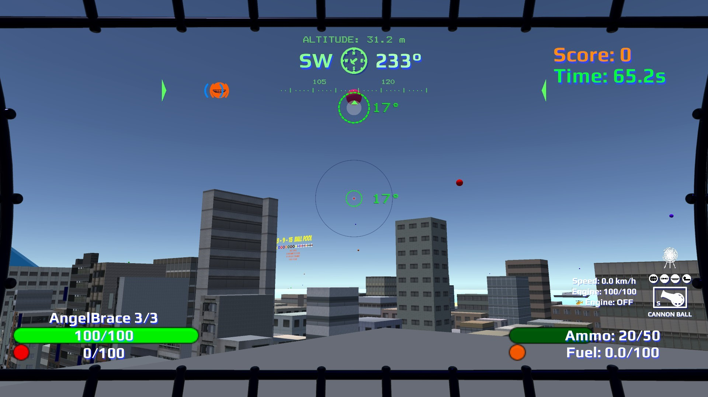
13-weapons-hotbar.jpg (optional; green Cannon or purple BallChain loft)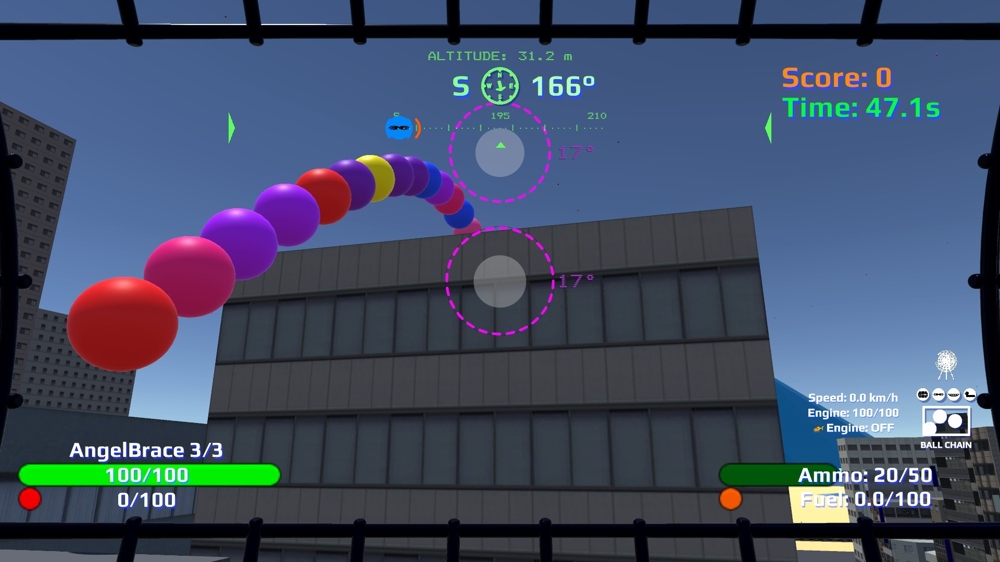
26-ballchain-throw.jpg (optional)Equipment
- F — Propeller (flight)
- B — Duck Raft / Bowl
- E — Interact / collect
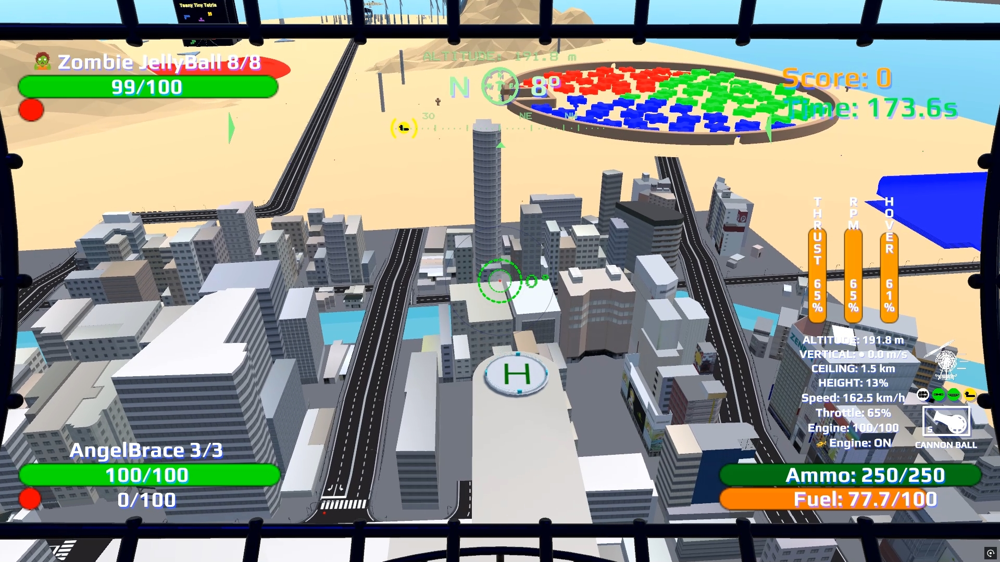
14-propeller-flight.jpg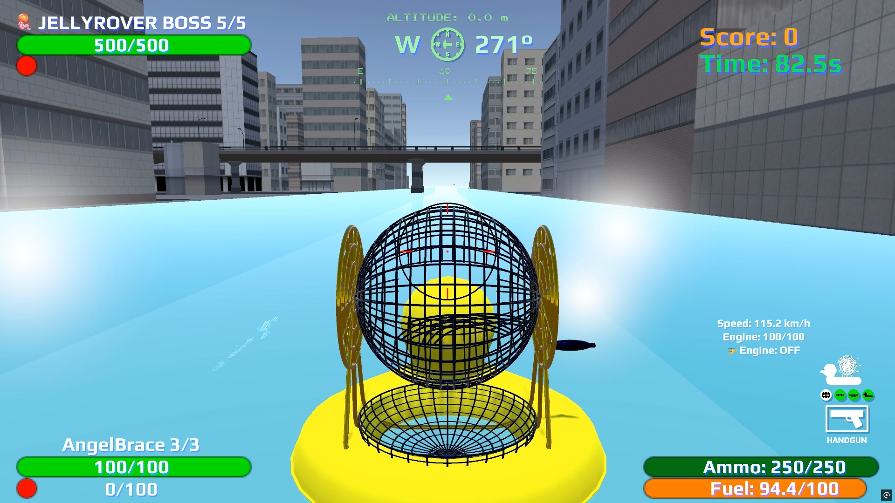
15-duck-raft.jpgMenus
- ESC — Pause / open Game Selection (3D HUD off). During death or victory, toggles the menu; ESC again returns to the camera pan
- P — Game pause (blocked during death / victory)
- Tab — Quick Menu (weapons / items)
- ` or F9 — Console
- Enter / Space — Confirm in menus (Game Over uses the on-screen Continue / Restart buttons)
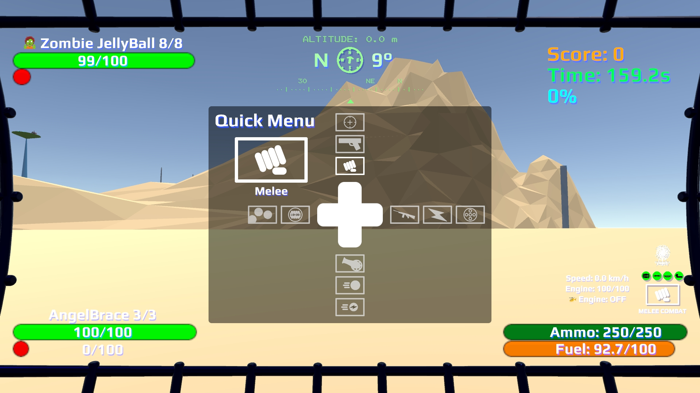
03-quick-menu.jpg. Tip: Shift+F12 for a clean PNG crop.Quick Menu navigation
- W / A / S / D — Direction categories. After DetPack, C4TimerBomb sits next to BallChain on the left/horizontal row; selecting it shows the yellow-ball charge count.
- E / Q — Cycle items in the selected direction
- LMB — Select (single-fire for auto weapons)
- RMB — Select (auto-fire mode)
- S+A held — Exit to Game Selection
Time control
Pause / Break toggles slow motion while you play. Page Up / Page Down raise or lower time scale. This is separate from P (normal game pause).
Lives, death, and water
You start with 3 lives. A lethal hit (enemies, fall onto land or buildings, void) costs one life. The world snapshot-pauses: you stay frozen while the camera orbits and the Game Over panel is up.
| Situation | Panel | Button |
|---|---|---|
| Lives left (e.g. 2/3) | You were Killed! plus the reason and lives remaining | Continue — respawn and keep the run |
| Last life | GAME OVER! plus the reason and final score | Restart — full new game |
| Escaped the island | Victory! | Restart — new game |
GAME OVER appears only when all lives are gone. Mid-run deaths do not stamp GAME OVER on the HUD toast; the panel already has the reason and lives.
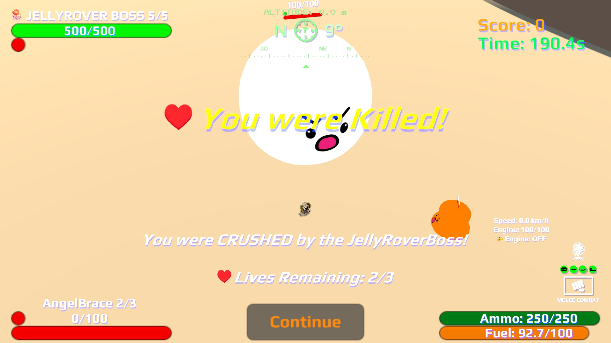
27-continue-death.jpg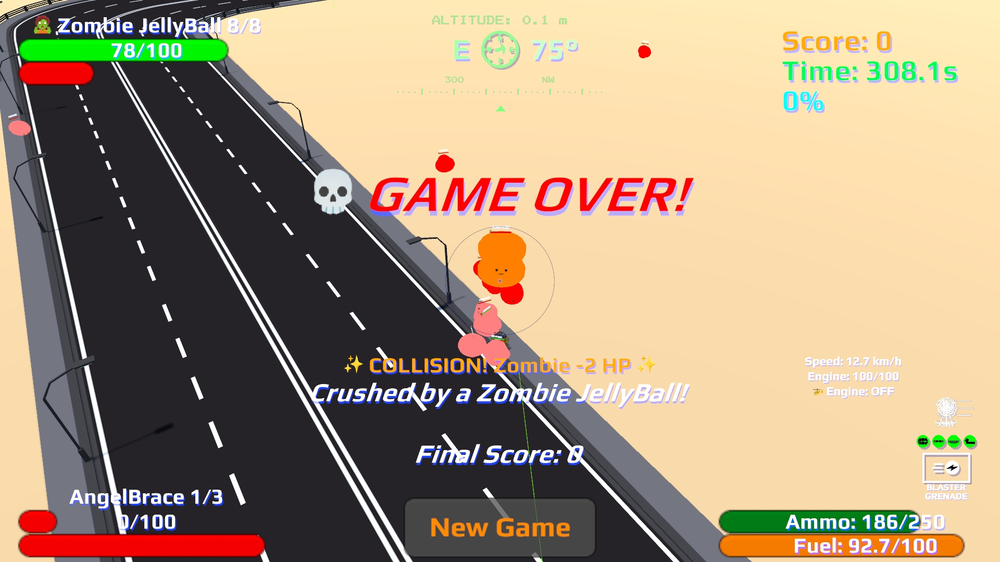
28-game-over-restart.jpgESC during the end sequence
- First ESC — Game Selection (3D HUD off), same as a normal pause.
- Second ESC — back to the orbit and Game Over panel, still paused, with Continue or Restart restored.
- P does nothing here. Click the button to leave the sequence.
Water landing (Ocean)
Landing in Ocean-tagged water (rivers and sea at the water line) cancels fall impact, like Minecraft water. You do not need the propeller. Solid ground, buildings, and the void still hurt. Outer ocean on the Duck Raft is still the escape / victory path.
UI hotkeys
Help & settings (F1–F4)
| Key | Action |
|---|---|
| F1 | Help |
| F2 | Quick Settings (Escaper Settings) |
| F3 | Quick Input Mapping (GamePad Key Bindings) |
| F4 | (reserved) |
Game utils (F5–F8)
| Key | Action |
|---|---|
| F5 / F6 / F7 | (reserved — future Save / Load) |
| F8 | Scores overlay (Escaper + live mini-game pages; soft-pauses mid-match) |
| Space (F8 open) | Cycle Escaper → Bowling → Billiards → BaffleShots → Chess → Tetris |
Console & cams (F9–F12)
| Key | Action |
|---|---|
| F9 | Console (same as `) |
| F10 | Binoculars (toggle zoom, no weapon sight) |
| F11 | Sky Eye. While open, Shift+1–4 focuses enemy types |
| F12 | SnapShotCam doc screenshot panel |
| Shift+F12 | PNG crop of open UI panel; else full-screen JPG |
| Home (SnapShotCam open) | Sync fly camera to spinCageEyes |
Other HUD
| Key | Action |
|---|---|
| Caps Lock | Game info balloon — whose turn during mini-games, or collapse/expand zone / Nav OPS / chess tips |
| Print Screen | Full main-camera JPG |
| - / = | Camera zoom out / in |
Direction indicators (under the compass)
Below the compass, up to four sliding icons show where something important is on the map. Quest-item icons appear clockwise in the order you collect them (bowl, then propeller, then duck raft). FlipChip uses the same band but is not a quest item — it points at the Checkers coin while it is in the world. Each icon moves left or right on the band to match compass bearing — center means straight ahead. Icons grow larger when you are close and shrink as you move away (about full size near 1 m, smallest around 1 km). If the target is far behind you, its icon hides until you turn back toward it.
| Icon | Points toward | When it shows |
|---|---|---|
| Cage Bowl | Lost bowl spawn (Modern) or skyscraper bowl (Quest) | Until you collect the bowl |
| Propeller | Lost propeller spawn (Modern) or SnowyLavaRock (Quest) | Until you collect the propeller |
| Duck Raft | Escape raft on the ocean | Until you board the raft |
| FlipChip | Checkers OPS coin in the 3D world | While the coin is spawned and not in your melee hand |
Each icon sits in a matching bracket ring (two half-circles). The ring stays the same size; the icon grows as you get closer and shrinks as you move away.

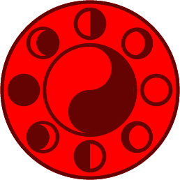
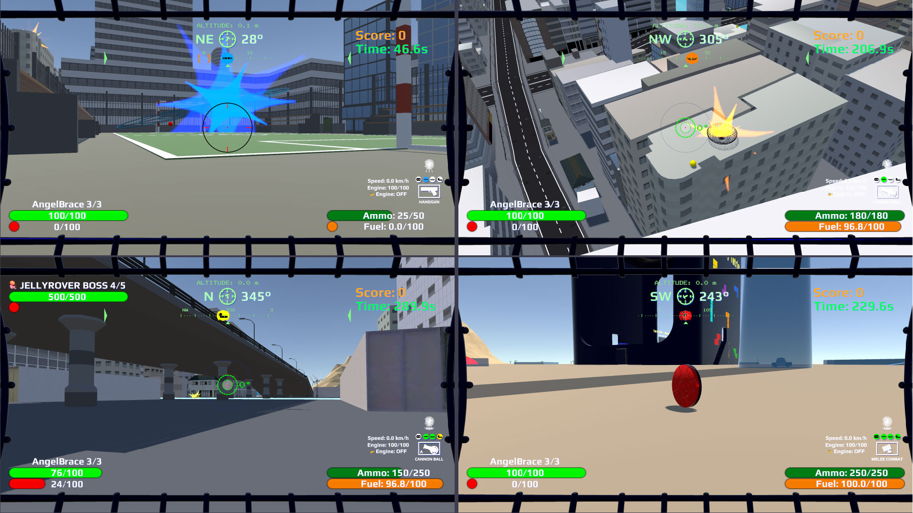
The three quest icons can also pulse when SoundSight hears their treasure chime. The DetPack and ammo crates use the top inventory row only — there is no compass direction icon for them.
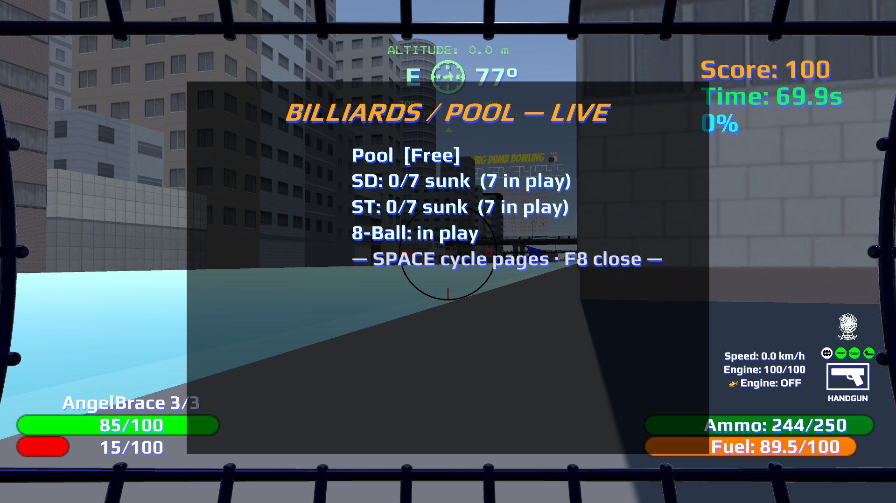
04-scores-overlay-f4.jpg (filename kept for existing shots)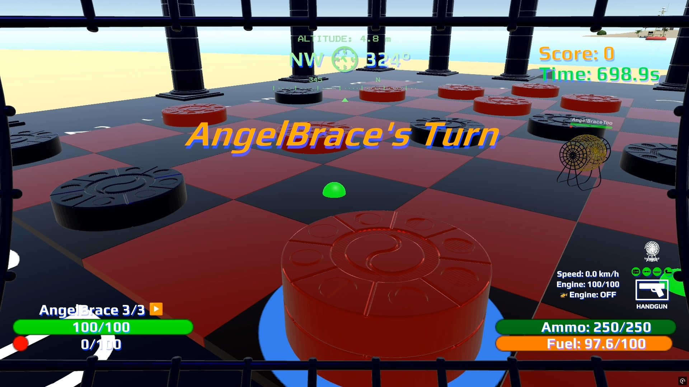
05-turn-banner-header.jpg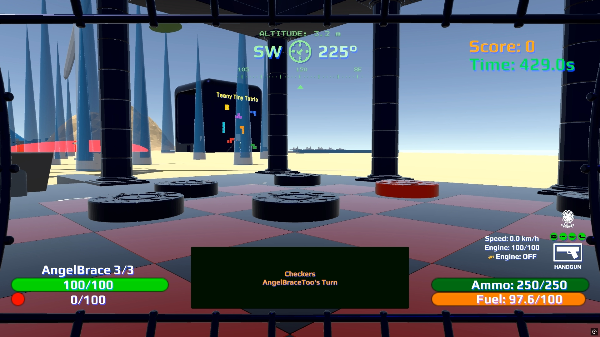
06-game-info-balloon.jpgGamepad
You can mix gamepad movement with mouse look. Remap via F7 or Settings.
| Button | Xbox | Common functions |
|---|---|---|
| 1 | A (South) | Jump, Continue, Activate |
| 2 | B (East) | Sprint |
| 3 | X (West) | Propeller / Interact |
| 4 | Y (North) | Duck Raft |
| 5 | LB | Zoom; auto-fire select in Quick Menu |
| 6 | RB | Fire; single-fire select in Quick Menu |
| 7 | LT | Throw sight loft down (Cannon Ball / BallChain) |
| 8 | RT | Throw sight loft up (Cannon Ball / BallChain) |
| 9 | Back | Camera mode |
| 10 | Start | Quick Menu |
| 11 | L3 | Ghost Menu (no pause) |
| 12 | R3 | Precision Aim |
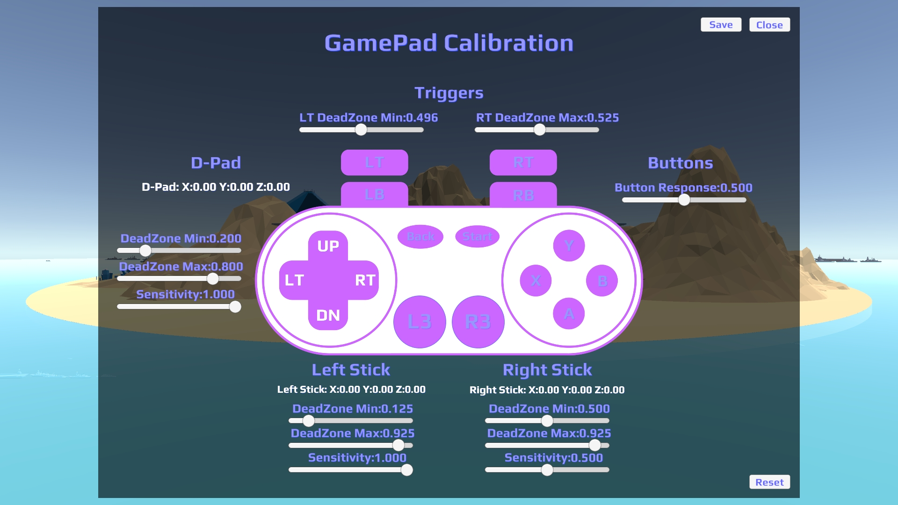
12-gamepad-reference.jpg (Settings or F3 Input Mapping)Mini-games — shared lobby & turns
Yellow GameOPS zone
Every GameOPS terminal sits on a yellow grid. Step onto it and that game’s UI turns on. Weapons do not fire — mouse or gamepad clicks the terminal instead. Step off and combat works again.
Same idea everywhere: Nav OPS, Pool, Bowling, Tetris OPS, and Checkers OPS. Chess-Stele has two yellow pads — front and back.
Two extras (not the GameOPS menu): Tetris Play Spot also turns weapons off, but that pad is for moving pieces, not the OPS menu. On the Checkers board, standing on a piece or looking down also turns weapons off so hops can use RMB.
Multiplayer lobby
Host is the player who started the room. Only the host opens the lobby, changes mode, resets, and starts.
| Input | Who | Action |
|---|---|---|
| Shift+LMB | Host only | Open a new game lobby (recruiting) — required before guests can join |
| RMB or Join + LMB | Guest | Join while recruiting (on the yellow grid at the pool table) |
| LMB | Host only | Start when players have joined |
Remotes can only RMB join — they cannot open the lobby, change mode, reset, or start. The host runs the table / lane.
Tetris exception: Tetris is live / simultaneous — it does not use turn banners. 2P flashes Players Ready when Playing starts (host South Play Spot 5s after Engage).
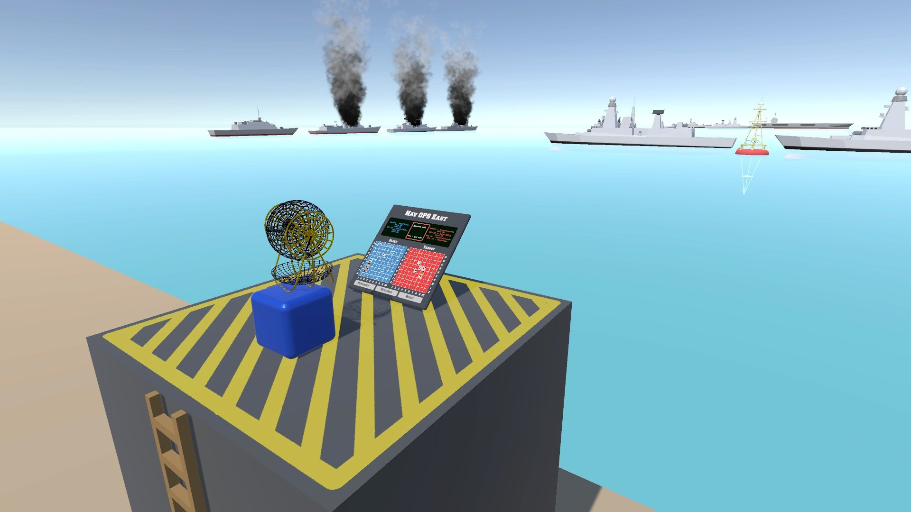
Pool (15-Ball / 9-Ball)
Stand on the yellow grid at the table. Mode and short rules appear on the pool board.
Host controls
| Input | Action |
|---|---|
| Mouse wheel | Cycle Free → 8-Ball Last → Solids & Stripes → 9-Ball Arcade → 9-Ball Classic (idle or recruiting) |
| RMB (Idle) | Cycle mode (same as one wheel step) |
| Shift+ wheel | Cycle solo challenge overlay (solo only; ignored in multiplayer lobbies) |
| Shift+LMB | Open a new lobby / re-rack recruiting |
| Shift+RMB | Reset — leave finished or in-progress match; open a new lobby so mode can be changed again |
| LMB | Start the match (or open a new lobby if the match already ended) |
| RMB (Recruiting) | Join the lobby |
Remote players
- RMB (Recruiting) or Join + LMB — join only (must be on the yellow grid at the table)
- Before host opens lobby — HUD: Waiting for host to open lobby (LMB at pool switch)
- Cannot reset, change mode, or start (toast: Host only — use RMB to join)
Modes
- Free — sink any ball in any order; keep the turn after a legal sink (no foul). Miss when balls stop → next player (No balls pocketed — not a foul).
- 8-Ball Last — sink others first; early 8 in the bay scores no points / can lose.
- Solids & Stripes — first group ball sunk locks groups per player
(board shows
Name (Solids)/Name (Stripes)). Wrong group / early 8 = no points. - 9-Ball Arcade — diamond rack (1 at apex, 9 in center); 9 must be last except a golden break (9 on a legal opening break = win). Early 9 otherwise = loss.
- 9-Ball Classic — same diamond; always hit the lowest ball first; pocket the 9 on any legal shot to win. Illegal 9 → foul + 9 spotted.
Cue-stand shooting
- Walk onto the cue ball to select it (purple sight + cue-stick power slider).
- Aim with look (banks / open aim OK — no object ball required under the ray).
- Mouse wheel sets shot power; LMB shoots a flat impulse.
- Space / Jump (or step off the cue) cancels select. Weapons are halted while the cue is selected.
- The cue is not melee-punched — only cue-stand shots move it. Object balls can still be nudged with weapons / melee when not on the cue.
Break / ball-in-hand
- Opening break: cue starts in the kitchen (behind the head string).
- After a cue scratch (or certain fouls): ball-in-hand — stand on the cue, hold Shift, aim a transparent ghost, LMB to place once. Release Shift to cancel (cue stays put).
- Most modes: place in the kitchen. 9-Ball fouls: place anywhere on the felt.
Turns, scratch, scoring
After you hit, the table waits until every ball in motion fully stops. Legal sink + no foul → keep turn; miss or foul → next player.
Scratch / foul (important split):
- Cue scratch (foul + re-spot + ball-in-hand): cue goes down a pocket into the return bay, or stays off the felt for about 3 seconds. Brief pocket airtime is fine. Cage bumps that shove the cue are not treated as pocket scratches.
- Object ball off the table (~3s off both felt and bay, e.g. on the floor): scratched / no points (red X on the header). The cue is not re-spotted and may keep rolling until it stops — that alone is not ball-in-hand.
- A ball confirmed in the return bay is a sink (green check on the header).
Header icons: the table header shows all 15 ball icons. Green check = sunk for credit; red X = scratched / no-points.
Scoreboard — who sank what (pool board and F8 → Billiards):
- SD-1 … SD-7 — solids
- ST-9 … ST-15 — stripes
- 8 — eight-ball
- 9 — nine-ball (9-Ball modes)
AngelBrace Sunk: SD-1, SD-3, SD-5 AngelBraceToo Sunk: ST-9, ST-11, 8
HUD toasts use the same codes and ball badges (e.g. AngelBrace sunk SD-3).
In multiplayer the host simulates physics and broadcasts sunk / scratch toasts so remotes see the same HUD messages.
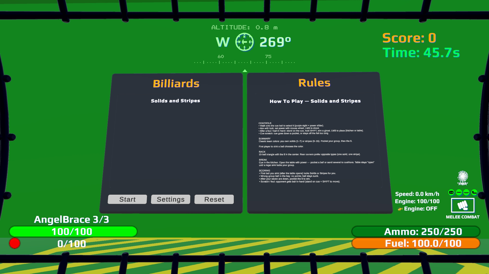
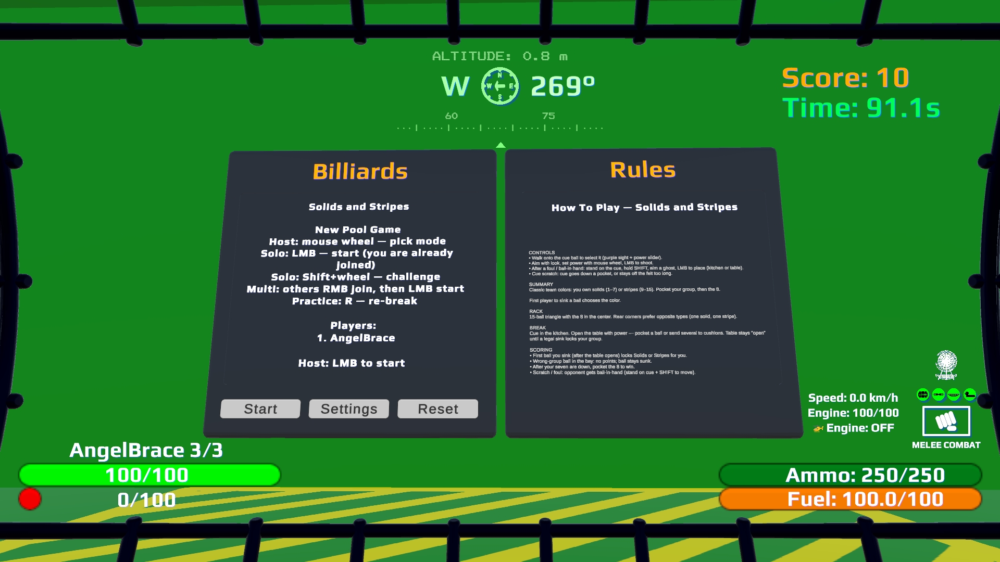
16-pool-lobby-recruiting.jpgBig Dumb Bowling
Stand on the yellow grid at the lane.
| Input | Who | Action |
|---|---|---|
| Shift+LMB | Host only | Open a new bowling lobby |
| LMB | Host only | Start the match |
| RMB (Recruiting) | Anyone | Join |
Remotes: RMB join only (cannot open lobby or start).
Each player bowls a full frame (up to two balls, or three in the 10th; a strike ends early), then the turn passes. Scoreboard and F8 bowling page show roster and turn.
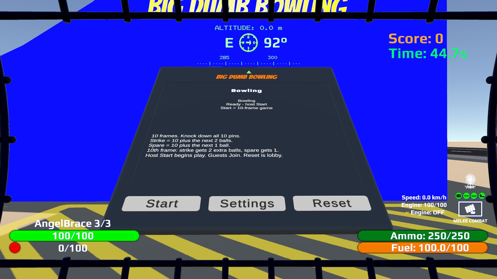
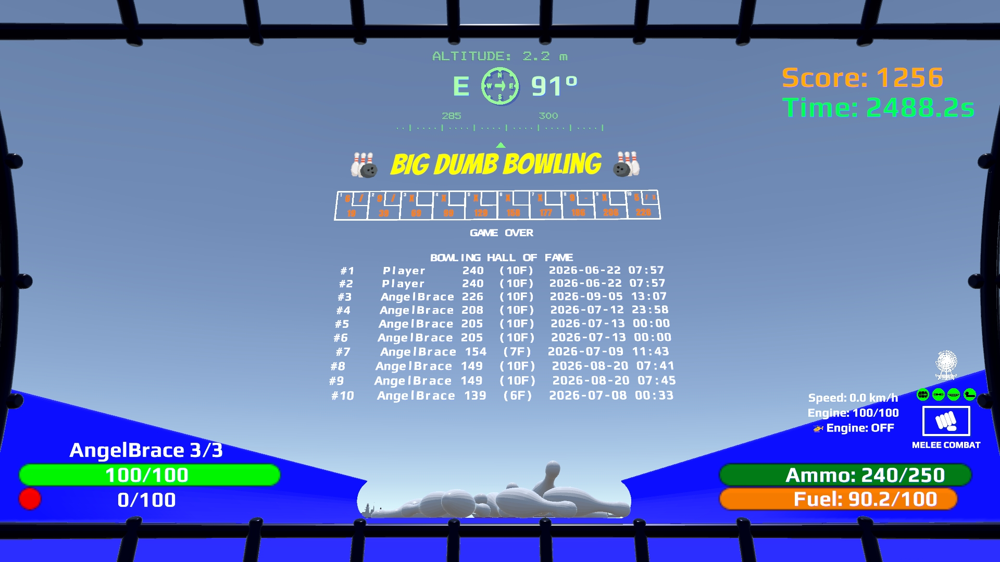
17-bowling-scoreboard.jpgTetris
Stand on the yellow grid at Tetris OPS for the menu (board/rules, Settings, Start, Reset). Host uses the South pad; guest uses North. The Play Spot is a separate no-weapon pad for moving pieces, not the OPS menu. Live standings also on F8 → Tetris.
Tetris is live / simultaneous — it does not use "{Name}'s Turn" (solo never flashes a turn banner). 2P flashes Players Ready when the match goes live. Ends use Wins! / You Lose! / Draw! / Co-op Clear! / Sprint Clear! / Time's Up!.
OPS lobby
Aim with the crosshair on the yellow grid. Mode wheel and Start/Reset are host only.
| Input | Action |
|---|---|
| Mouse wheel | Cycle Marathon → Sprint → Ultra → 2P Co-op → Vs Race → Vs Attack → Ultra Duel — locked while a match is active |
| Aim Start + LMB | Engage (music on, board ready). Host then stands on South Play Spot for 5 seconds → Playing. Leave South during the 5s to cancel. Non-host Start claims North |
| Aim Settings + LMB | Toggle OPS ↔ Settings. Level 1–29 + arena 1/2 · 3/4 · Full (host only); Music (local — aim slider + wheel) |
| Aim Reset + LMB | Clear board / corpse → lobby; pick a new mode |
Clamping to a Tetris PlayZone block
After Start, clamp to one of the five PlayZone blocks in front of the Tetris OPS panel. South / Player 1 uses the blue blocks; North / Player 2 uses the red blocks. That is where piece control lives — not the yellow OPS grid.
You have 5 seconds to pick a block and settle. Clamping starts 3 seconds after you stop moving (if you were already standing there when the match went live, you clamp right away).
Once clamped, the cage cannot strafe or walk. All WASD (and the stick) moves the Tetris piece instead. Jump off a PlayZone block to break the clamp any time. You can jump up and land on a different block. Each time you leave a block during a match, stay still 3 seconds again before WASD returns to Tetris.
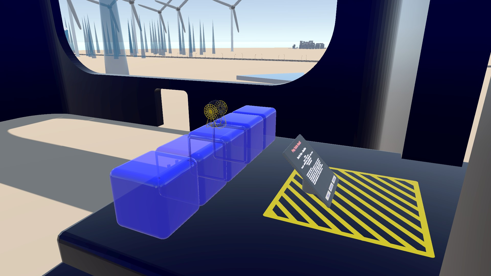
Match flow
- Engage → South pad 5s → Playing (host). Already on your pad → clamp immediately; else 3s settle. Then 0.5s ready wait → first piece (A/D ready).
- Marathon — solo well; sky score line. Survive as long as you can.
- Sprint — first to 40 lines; elapsed time; Sprint Clear!; top-out → Game Over.
- Ultra — 2:00 clock; Time's Up! keeps score; top-out → Game Over.
- 2P Co-op — shared 20×20 (no mid wall), two pieces. Team 40 lines → Co-op Clear!; either top-out → shared Game Over. Bright = yours, dim = other.
- 2P Vs Race — dual 10×20 + mid wall. South = right well, North = left. First to 40 lines wins; top-out loses.
- 2P Vs Attack — same dual layout. Garbage: Double 1, Triple 2, Tetris 4 (Single 0). Clears cancel your pending garbage first; leftover rows rise on the opponent’s next lock.
- 2P Ultra Duel — same dual layout. Shared 2:00; highest score wins; tie → Draw!; top-out loses.
- After Game Over / Vs end, blocks and TetrisBorder stay until host Start or Reset.
Play Spot (while clamped)
| Input | Action |
|---|---|
| A / D or Left Stick / D-Pad | Move left / right (facing-aware for South vs North) |
| Q / LB | Rotate counter-clockwise |
| E / RB | Rotate clockwise |
| W / Stick up | Flip 180° |
| C / Y | Hold (once per piece until lock) |
| Hold S / Stick down | Soft-drop (accelerates) |
| Double-tap S / RT | Hard-drop |
| Jump (B) or Shift (A)+WASD | Leave clamp (no piece control until you stand 3s again) |
| Gravity | Pieces fall by level; landing auto-locks (~0.5s lock delay with kicks) |
A translucent ghost shows the landing cell (preview only).
While Playing, the FPS HUD shows NEXT (and optional HOLD), level, and your score.
Guideline scoring: 100 / 300 / 500 / 800 × level; gravity level rises from the Settings start level.
In 2P, guests see the same mode, board, and pieces; Player 2 joins North (non-host Start). Start level and arena scale are host-set; music volume stays local. Play Tetris (and a live venue switch into Tetris) seats the host South (same pad as solo) and Player 2 North. Extra players stand near North. Quest gear, full ammo, and full fuel are already equipped.
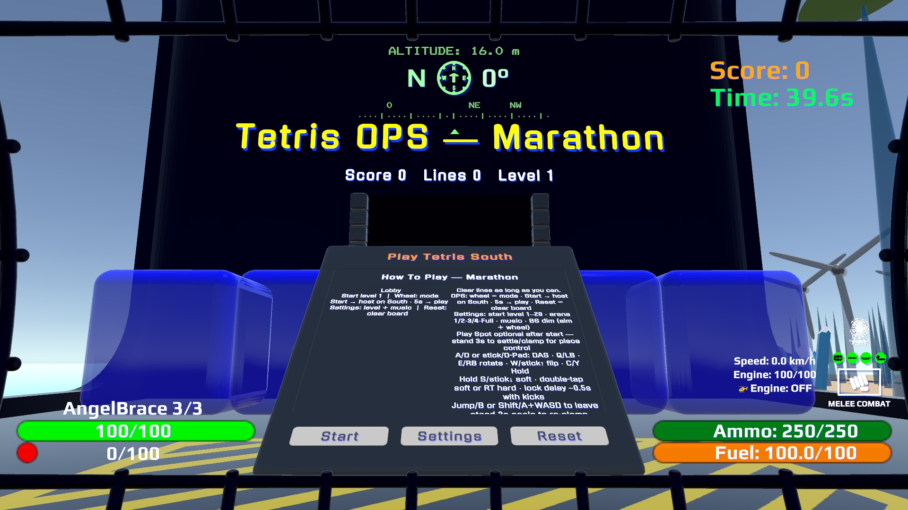
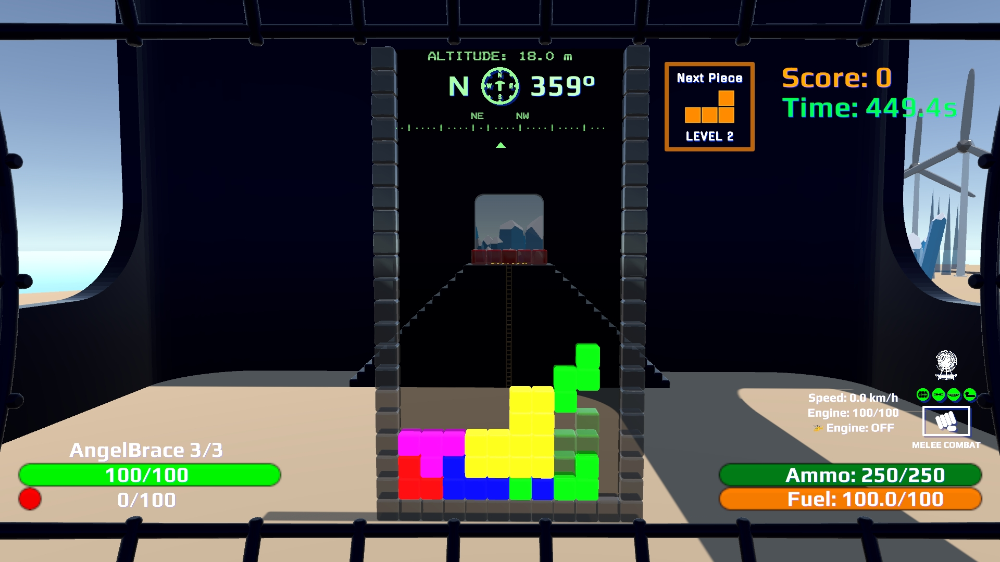
25-tetris-playing.jpgChess at South Parthenon
Full dedicated guide: Chess at South Parthenon (same guide as the dedicated GitHub Page).
Chess-Stele has two yellow pads: front is the main stele (Level, START, Clear), back is the 2D board. Step on either grid for that UI; weapons stay off while you are on the pad.
Short version: use the front stele for solo Level / Puzzles / Custom / Leorik. 2P (Play Chess venue or a live match): Level / Puzzles / Custom / Leorik are hidden. Host START begins a new 2P game and warps both cages to the board seats (White's Turn; host = White, guest = Black; lion hidden). Host Clear resets the 32 pieces in place (no second warp). Backspace takes back the last move once, then play a new move. The back pad is the optional 2D board only. Labels / Predict / Style / music stay local. Tab: purple predict + raycast. Play on the outdoor 3D board or the back stele; RMB pending, fire commits. Turns use the shared header banner and Caps Lock balloon.
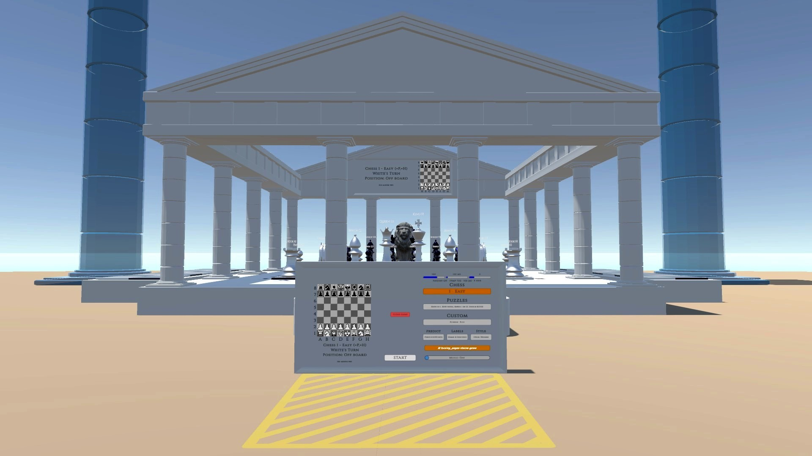
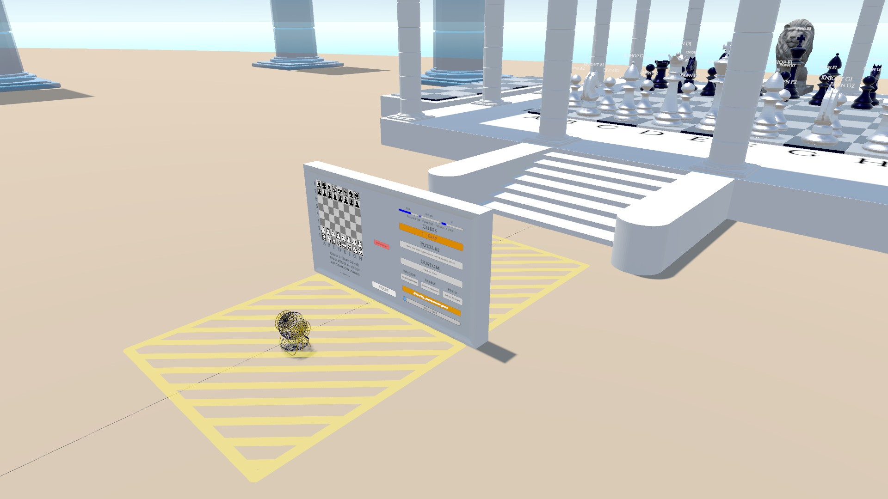
Checkers at North Parthenon
North Parthenon is the black marble mirror of South. The 8×8 red/black board uses dark squares only: Black (darker) starts on ranks 1–3, Red (lighter) on ranks 6–8.
Checkers OPS terminal
Stand on the yellow grid at Checkers OPS (weapons off), aim a button with the crosshair, and LMB to click.
| Control | Who | Action |
|---|---|---|
| Start | Host / solo | Begin the match — board re-racks, variant locks, match music, both cages warp to seats |
| Join (Start relabels) | Remote in a room | Marks lobby presence — no seat warp until host Start |
| FlipChip | Anyone at OPS | Spawns coin on OPS screen — Melee RMB pickup, LMB toss; top color sets Player1/Host on Start (see FlipChip above) |
| Reset | Host / solo | Lobby reset + unlock variant |
| Settings | Anyone | Local music only — aim the slider + wheel for volume, aim the music button + wheel to change track, click it to restart (turning_pages-vienna-game, turning_pages-petrovs-defense) |
| Mouse wheel (OPS panel, nothing under the crosshair) | Host only | Cycle the 8×8 variant; guests get a Host only - variant toast |
Offline is always vs AI (you are Player1; default Black until a FlipChip toss changes it — in Anti-Checkers the AI opens when Red moves first); in a multiplayer room it is always 2P. There is no vs-AI / hotseat toggle — the session decides. Cycling the variant re-racks the board and is pushed to guests. The variant locks on Start and on the first move played; only host Reset unlocks it.
Variants
Wheel order. Jumps are mandatory in every variant — quiet moves are only offered when no jump exists.
| Variant | Men jump backward | Kings | Extra rule |
|---|---|---|---|
| American (default) | No | One square | Crowning ends the turn |
| Pool | Yes | Flying | Choose freely among jump lines |
| Italian | No | One square | Men cannot take kings; a king capture outranks a man capture; take the longest line |
| Russian | Yes | Flying | Crown mid-jump and keep jumping |
| Czech | No | Flying | If a king can capture, you must capture with a king |
| Brazilian | Yes | Flying | Take the longest capture |
| Spanish | No | Flying | Take the longest capture |
| Anti-Checkers | Yes | Flying | Poddavki / giveaway — Red moves first, crown-and-continue, and both goals invert: you win by losing every piece or by having no legal move |
Except for Anti-Checkers, Black moves first and you win by taking every enemy piece or leaving the opponent with no legal move. The OPS rules panel always prints the active variant's summary.
Playing on the 3D board
You must be inside the board play zone. Weapons and RMB zoom stay off whenever you touch a piece or square, or stand in the zone looking down.
- Stand on one of your pieces to select it — a blue circle marks that square.
- Markers appear: green sphere (GreenEmit) = a square you can land on, green circle = a piece you can capture. The end of a multi-jump gets the raised far sphere.
- Aim a marker to preview that line; it brightens. Aiming a middle hop takes only that much of the chain, aiming the far sphere takes the whole chain.
- RMB locks the preview as pending — orange sphere and circle, status reading
Pending A3 -> C5 x2 (LMB commit). - LMB commits and the piece hops square by square. Backspace cancels the pending line; RMB again clears the pending line and the selection.
Turns, results, and multiplayer
The OPS board shows Black Turn / Red Turn; the shared top HUD flashes the player name
for ~7s and Caps Lock recalls it in the balloon.
A match ends on {Color} Wins! when one side has no pieces or the side to move has no legal move
(both inverted in Anti-Checkers).
Player1 / host color comes from the FlipChip toss on Start (default Black). Guest gets the opposite color. Either player can toss before Start. Join marks lobby only — no seat warp until host Start. Host Start begins the match for everyone — variant applied, AI off, seats from the host's coin, each cage warped. Both players see the same hop chain. Host Reset and the host variant wheel apply for everyone; leaving the room drops back to solo vs AI without wiping the board.
Play Checkers seats Player 1 on Black and Player 2 on Red.
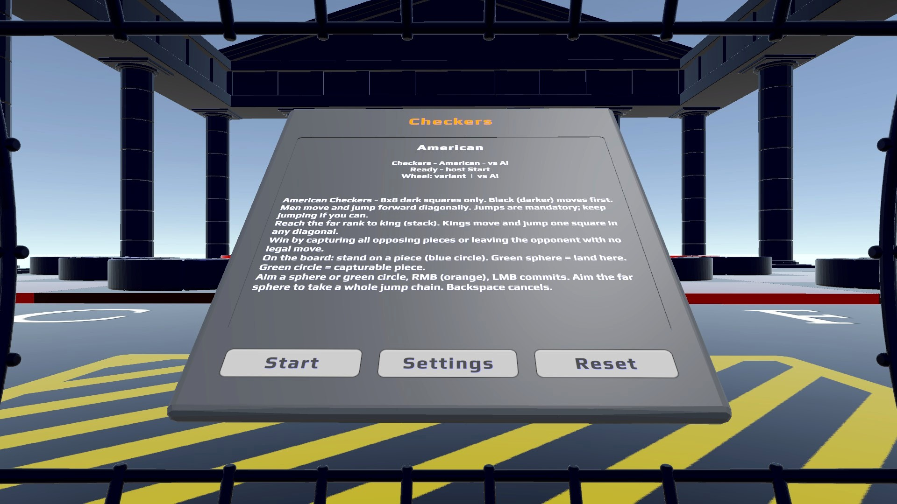
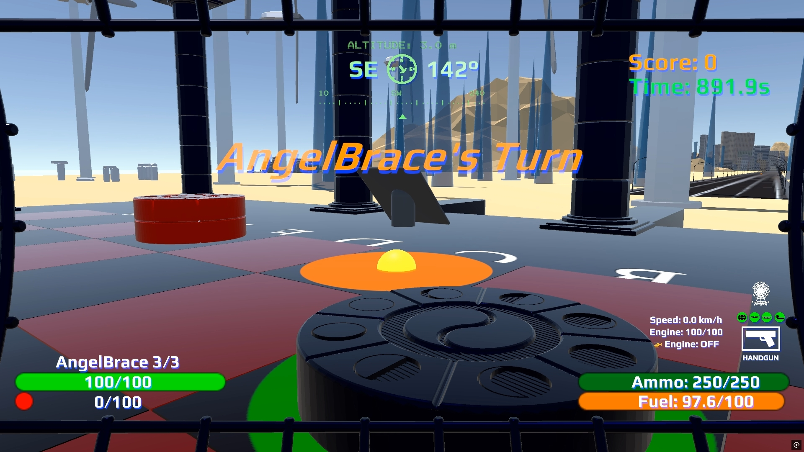
31-checkers-board-markers.jpg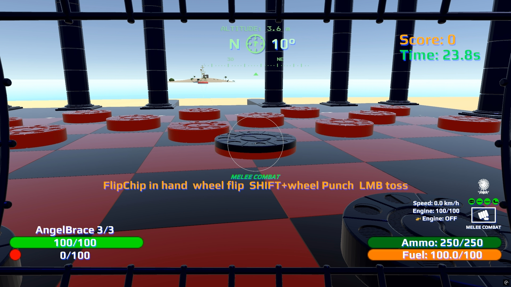
32-checkers-coin-toss.jpg (optional)BaffleShots at Nav OPS
Step on the yellow grid at Nav OPS (weapons off). RMB zoom is blocked only during fleet setup / Nav Plan, not once battle starts. Your turn / Opponent's turn use the shared HUD banner and Caps Lock balloon. Status also appears on F8 → BaffleShots.
Planning
- Nav Plan — random kick-start for your fleet groups (and Repulse Mines if enabled). Reposition with RMB drag · LMB rotate · release to place. Nav Plan hides once battle is underway; Reset returns to setup and shows it again.
- Confirm / Start when the fleet is complete. Solo: Confirm starts vs AI. 2P: each seat Confirms. Host first → Waiting… until the guest confirms, then Start. Guest first → host button is already Start (one click locks the host fleet and begins battle). Only the host can Start; the guest stays on Waiting… / Ready.
Settings
- Classic BattleShip — hardest. Hits stay secret as Group? and Ship? (you still see the picture) until you sink the whole group. Group Sink stays on.
- BaffleShots — you see the ship name as soon as you hit it.
- In both, a hit is an orange X and HIT!. When the group is gone, those marks turn red and it says SUNK!.
- Group Sink — on: the whole group goes down together. Off: ships in the group can sink one at a time. (Classic keeps this on.)
- Repulse Mines and Music are in the same panel (aim the music slider + wheel). In 2P, the host sets Classic, Group Sink, and mines. Music is just for you.
Repulse Mines
Experimental attack mines. When on, each side plants 2 on empty water on their fleet grid — the water the opponent is shooting at. Nav Plan places them randomly; move with RMB drag and LMB (or RMB-release) — setup only, not on ships or shot cells. You see the icon on your fleet grid; the target grid shows it only after a shot hits one (REPULSE, yellow X). The shot bounces back at the ship that fired it: that player takes a random remaining hull hit and must stop to repair for one turn (yellow X on that fleet cell + smoke; the opponent gets an extra shot). When their real turn returns, smoke and yellow X clear unless that ship was hit again during repairs.
Battle & game over
Aim the viewport crosshair at the target grid and LMB to fire on your turn. On game over, the target grid reveals any remaining enemy ships and unexploded Repulse Mines.
Solo: you vs AI when you are not in a multiplayer room. 2P: East is the host, West is the guest. Play BaffleShots (and a live venue switch) seats host East and guest West. Place and Confirm at your seat; host Start when both fleets are locked (see Confirm / Start above). Host-only Reset. Ocean fog hides the opponent’s ships until you hit them; hit and sink effects still play.
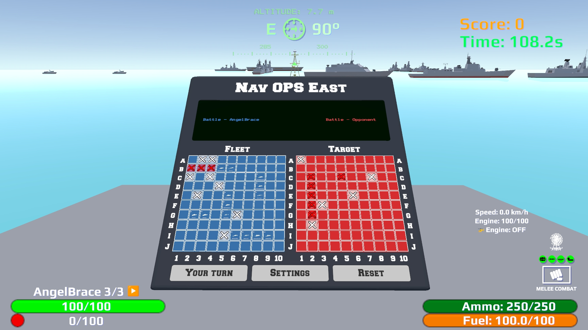
Tips
- Mixed input — gamepad move + mouse look works together.
- Auto-fire weapons — select with RMB (mouse) or LB (gamepad) in Quick Menu.
- Throw sight — mouse wheel (or LT/RT) sets loft for Cannon Ball (green) and BallChain (purple). Each weapon keeps its own loft when you switch.
- BallChain (0) — low-velocity toss that lays climbable steps as it flies; keep shooting to add links; melee a segment to clear a line.
- Yellow GameOPS zones — step on the yellow grid at Nav OPS, Pool, Bowling, Tetris OPS, Checkers OPS, or either Chess-Stele pad: that game’s UI is on and weapons are off. Tetris Play Spot is a separate no-weapon pad for moving pieces. On a checker piece or square — or anywhere on the checkers board while you look down — weapons and RMB zoom are off so hops can use RMB. At Nav OPS, RMB zoom is blocked only during fleet setup (not during battle).
- Direction indicators — quest items clockwise in the order you get them (bowl, propeller, duck raft); FlipChip is on the same band but is not a quest item. Icons slide with bearing and scale with distance; DetPack has inventory only, no arrow.
- Scores — F8 open, Space cycle (includes Tetris).
- Whose turn / who won — top HUD ~7s (Pool also shows Wins!); Caps Lock for the balloon. Tetris is live — 2P shows Players Ready, then Wins! / You Lose! / Draw! / Co-op Clear! / Sprint Clear! / Time's Up!.
- Mini-game host — only the host (the player who started the room) opens, starts, resets, and (Pool) changes mode; everyone else RMB joins while recruiting (Pool: host Shift+LMB opens lobby first; guest RMB or Join on the yellow grid at the table). Live venue switch: host Game Mode hops Play / Explore mid-session (combat modes = New Game). Tetris: host Engage at OPS, then South Play Spot for 5s to start Playing; guests claim North via non-host Start; spawn host South / guest North. BaffleShots: East host / West guest; Confirm then host Start (Waiting… if the host locked first); fog until hits; host owns Classic / Group Sink / Repulse Mines settings. Checkers: host owns variant wheel, Start, Reset; guest Join marks lobby; FlipChip button + pre-game toss sets Player1/Host color before Start. Chess 2P: host START / Clear only; no Level / Puzzles / Custom / Leorik on the stele.
- Checkers — solo is always vs AI (Player1 = you), a multiplayer room is always 2P. Wheel the OPS panel for the variant (locks on Start or the first move, unlocks on host Reset). FlipChip before Start: top color = Player1/Host color (default Black). On the board: stand on a piece (blue), aim a green sphere to land or a green circle to capture, RMB to pend (orange), LMB to commit, Backspace to cancel. Aim the far sphere to take a whole jump chain; once a chain starts you must finish it.
- BaffleShots — stand on the yellow grid at Nav OPS. Nav Plan randomizes fleet (+ Repulse Mines if on); RMB drag ships or mines in setup. Classic hides Group? / Ship? until a group sinks (Group Sink stays on). Hits are orange until sunk, then red. A hit mine repulses the shot back — attacker repairs and skips a turn, opponent gets a bonus shot. Game over reveals leftover ships/mines. 2P Confirm: host first → Waiting… then Start; guest first → host button is Start.
- Pool cue — walk onto the cue to shoot (wheel = power, LMB = stroke); Shift + ghost after a cue scratch for ball-in-hand — object balls off the table do not re-spot the cue.
- Tetris — Engage → host on South 5s → Playing. Clamp on a PlayZone block (blue South / red North): stay still 3s (or immediately if already there). While clamped the cage cannot walk — WASD moves the piece. Jump off to break clamp. Stick/D-Pad or A/D move, Q/LB · E/RB rotate, W/stick↑ flip, C/Y Hold, soft or RT hard; leftover board stays until Start/Reset. Spawn: host South, guest North.
- ESC — pause / Game Selection (HUD off); during death or victory, second ESC returns to the orbit with Continue / Restart.
- Lives — 3 lives; Continue respawns; Restart after the last life or a victory. GAME OVER means the run is finished.
- Ocean landing — falling into Ocean-tagged water has no fall impact; land and buildings still deal fall damage.
- F11 — Sky Eye camera (not a menu exit).
- Settings — camera invert, run/walk, balloon toggle, and more in F2.
Appendix — screenshots for authors
See the full filename checklist in images/IMAGES.md.
| Hotkey | Output |
|---|---|
| Print Screen | Full main-camera JPG |
| F12 | SnapShotCam fly panel |
| Home (SnapShotCam open) | Sync to spinCageEyes |
| Shift+F12 | PNG crop of open UI panel |
Missing images show a striped placeholder until you drop the matching file under images/.